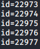
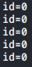

IP ID Sequence Generation algorithms
IP ID Sequence Generation algorithm type
•
Incremental: If all the differences between the probes with the Host zombie are less than ten. Difference up to ten here (rather than requiring sequential ordering) is because traffic from other hosts can cause sequence gaps, like in our case where the papabile Zombie Host have to communicate with the target host.
Note that many systems use a different
IP ID space for each host they communicate with. In that case, they may appear vulnerable to the
idle scan while still being secure
•
All zeroes: If all of the
IP ID numbers are zero
•
Randomized: If the
IP ID sequence increases every time by at least 20,000
•
Randomized positive: If any of the differences between two consecutive
IP IDs exceeds 1000, and is not evenly divisible by 256
•
Broken Increment: If all of the differences are divisible by 256 and no greater than 5,120
*screenshot of the id taken from
hping3 idle command